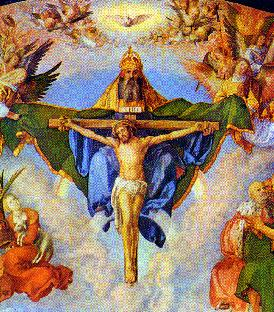

"RELACIONAMENTO
COM O CRIADOR"
 Em nossos dias, falar em DEUS exige um cuidado
muito especial, em face da
Em nossos dias, falar em DEUS exige um cuidado
muito especial, em face da 
realidade
de um mundo secularizado, que busca avidamente a realização do
presente, estimulando as criaturas a se firmarem por si mesmas no
cotidiano, fazendo a própria história, empenhando-se no
trabalho e vivendo de tal modo concentradas em seus afazeres, com
os olhos voltados para a Terra, que quase não sobra espaço para
olhar o Céu e refletirem sobre o mistério mais importante da
vida, que justamente é DEUS.
A par desse comportamento, observa-se uma certa
desorientação em muitas famílias, que não se empenham ou não
encontram o caminho para empreenderem efetivamente uma busca de
soluções para a educação de seus jovens. Considerando que a
juventude é o tempo de preparação e portanto, o mais
importante na vida das pessoas, quando deveriam dedicar-se aos
estudos, o desenvolvimento e aprimoramento técnico e
científico, adquirindo os conhecimentos necessários à profissionalidade
e a formação do caráter e também, quando os jóvens devem ser
despertados para DEUS e para as coisas sagradas, instruídos
através de uma catequese bem orientada, que realce a necessidade
do cultivo e do desenvolvimento do espírito, da mesma maneira que
deve ser propiciada ao jóvem a prática de um esporte, para o seu
aprimoramento físico, objetivando tornar as criaturas equilibradas
física e espiritualmente, perfeitamente sadias e normais de Corpo
e Alma, ao invés de lhes permitirem viver uma existência ilusória,
fundamentada no falso e irreal exemplo, que não orienta e nem
constrói e que conduz a um preocupante exercício da luxúria
e da sensualidade.
Esta realidade rouba em muitas pessoas,
a disposição para o trabalho e a perseverança aos compromissos,
esfriando consequentemente seus sentimentos mais puros,
afastando-os da razão primordial da existência, tornando-os
empedernidos e indiferentes, sem estimulo para abrir o coração
às coisas espirituais e oferecer condições à oração e
participar de eventos religiosos, porque querem viver o presente,
onde sempre há um
"programa melhor", relacionado com o namoro avançado em libertinagem
e a um vigoroso estimulo sexual através de "conquistas audaciosas"
. No rol dos diverimentos também
não podem faltar as
"esnobações"
realizadas a pé ou motorizadas, para exibir destreza e habilidade,
colocando em risco a própria vida e a dos outros, porque na maioria
das vezes o "atrevimento
irresponsável" é
acompanhado de abusos, transformando-se em violencia
e tragédia.
A falta de preocupação com as
necessidades do espírito e da busca imprescindível do auxílio
Divino, modifica as pessoas, tornando-as imediatistas, vivendo em
função daquilo que conseguem no cotidiano, fundamentando a
existência na conquista material: na posse de patrimônios, na
procura de bens, na ansiosa e luxuriante busca de prazeres.
As vezes, no cotidiano, algumas pessoas até citam o nome de
DEUS... Mas sem qualquer finalidade responsável, apenas
para dar força a um
"juramento" ou para
exprimir surpresa diante de um fato inusitado ou de uma catástrofe.
Isto porque, eles consideram o SENHOR como algo inatingível,
um Ser que vive isolado em seu Divino Reino, completamente distante de nós!
Estas pessoas não conhecem
o Amor DEUS e não acreditam que o SENHOR vive em nosso
meio! Desconhecendo estas realidades, elas não possuem
o menor alicerce espiritual para edificar a fé, e não acreditando,
não gozam da felicidade de entrar em comunhão de amor com
este DEUS maravilhoso, que ajuda e protege todos os seus
filhos como um verdadeiro PAI, porque está vivo e
presente em nossa vida.
Consequentemente, não
cultivando os dons espirituais as criaturas perdem a característica
essencial de serem à imagem e semelhança do CRIADOR. A existência
se vulgariza porque vivem em função dos anseios e objetivos
materiais, tonando-se presa fácil para Satanás e seus asseclas.
Como consequência do procedimento anômalo, em nosso
tempo é comum as pessoas colocarem em dúvida o imenso Amor do PAI
ETERNO pela humanidade, através de questionamentos, como por exemplo:
"se o CRIADOR olha por
suas obras e se ELE é tão bom, como justificar as catástrofes que
causam tanta infelicidade e acontecem em todas as partes do mundo:
como as enchentes, as secas, os terremotos, acidentes terríveis,
doenças incuráveis, etc."?
No entanto, antes de questionar,
é importante conhecer a causa dos acontecimentos e observar, que a
grande maioria das ocorrências trágicas, tem sua origem nas obras e
intervenções direta da humanidade. As criaturas dão expansão as suas
ambições desenfreadas, concentrando a atenção somente em atingir
os seus objetivos, mesmo que tenham que utilizar recursos condenáveis,
desrespeitando o direito alheio, colocando em risco sua vida e de outras
pessoas, ultrapassando as barreiras da lei, rompendo o equilíbrio
ecológico, produzindo em consequência o embotamento de seu bom
senso, abrindo um tenebroso campo à insensatez. Os resultados logo
aparecem, trazendo prejuízos, sofrimentos, angústias, desespero
e aflições.
A poluição generalizada, unida a falta de higiene e assepsia,
faz nascer germens mais resistentes e desconhecidos, que dão origem
a muitas doenças, causando traumas e inquietude nas populações,
porque inclusive, não encontra nos medicamentos a mesma eficiência
para a cura e em alguns casos, nem existe o remédio adequado para
combater o mal.
A irresponsabilidade das pessoas, manifestada pela
auto-suficiência, pelo descaso e indiferença, por imperícia ou
ignorância, pelo abuso ou excesso de confiança, ou pela ambição
desenfreada e volúpia de poder, faz acontecer dramas, escandalos,
acidentes e desastres que são tragédias irreparáveis, que causam
tristeza e luto.
O desmatamento irresponsável e não orientado, para
a retirada de madeiras e fazer pasto, traz consequências
funestas porque produz um desequilíbrio ecológico, com
alterações climatéricas, cujos efeitos terríveis atingem
muitas partes, provocando danos, destruições e mortes. Isto
porque, a ausência de árvores, não viabiliza a retenção das
águas das chuvas no solo, a nível do lençol freático. A grande parte
escoa para os rios e córregos, produzindo enchentes e inundações,
deixando imensas superfícies alagadas expostas a ação dos raios
solares, que produzem a evaporação formando mais nuvens de chuva,
que fechando o círculo hídrico, descem à terra sob a forma de novas
tempestades torrenciais, ciclones e furacões, cada vez mais fortes
e violentos.
Os prejuízos atingem todas as classes e
principalmente os pobres. Eles não possuindo
recursos financeiros para adquirirem um lote urbanizado, acomodam-se
nas áreas que encontram, geralmente em terrenos esquecidos nas
encostas íngremes de morros, em situações precárias, com um mínimo
de conforto e um máximo de periculosidade, onde edificam a residência.
Na época das "águas"
, as chuvas descem torrenciais
e caudalosas pelas encostas, fazendo profundas erosões, produzindo quedas
de barreiras, destruindo casas e prédios, causando danos materiais
e matando muita gente.
Isto não poderia ser evitado se a administração
municipal ou estadual, ajudada pelo governo federal e a
iniciativa particular, se preocupassem com o problema e logo de
início, não permitissem a edificação em lugares inadequados,
reduzindo o volume das construções de risco e providenciando a
constituição de um fundo de auxílio aos menos favorecidos,
dando-lhes lotes urbanizados em terrenos preparados e
ajudando-lhes na construção do lar ?
Da mesma forma, aqueles que produzem
desmatamento, não deveriam também serem obrigados a reflorestar
outras regiões, objetivando manter o equilíbrio ecológico ?
Claro que sim.
Então, a culpa não é de DEUS, pelo contrário, em
face das muitas preces e súplicas que nestas ocasiões são dirigidas
ao CRIADOR, misericordiosamente ELE providencia para que
os males sejam atenuados e a gravidade dos acontecimentos seja
menos danosa.
Ao longo da história da
civilização, facilmente constatamos a existência de uma quantidade
incontável de ocorrências lamentáveis nas quais, sempre
desponta como causador direto ou indireto, assim como o principal
responsável por uma somatória de procedimentos condenáveis, o
ser humano.
Ao contrário, como DEUS
fica triste e pesaroso diante destas ocorrências que produzem prejuízo,
tristeza e morte! É fácil verificar nas páginas do Novo Testamento
como JESUS se comovia diante do sofrimento e da dor! Tanta compaixão
ELE sentia, que se apressava em atender a todos que O procurava,
curando cegos, coxos, epilépticos, leprosos, exorcizando possessos
e ressuscitando mortos. E como sabemos, JESUS não veio aqui para
revelar a SI próprio. Tudo o que fez, os seus prodígios e
impressionantes milagres, foi em nome e por amor a seu PAI e
nosso PAI, ao seu DEUS e nosso DEUS.(Jo 20,17)
Esta realidade nos faz compreender, que do CRIADOR
só provém misericórdia, bondade e amor. O PAI é um DEUS DE AMOR,
repleto de compaixão por todos os seus filhos, para os pobres e necessitados,
para aqueles abandonados e os desajustados que nunca tiveram orientações
na vida, assim como por todos aqueles que são fieis, carinhosos e que
buscam a sua inefável e tão querida proteção.
Assim sendo, deveria constituir uma honesta e sincera
preocupação das famílias, a
"busca de DEUS",
não somente nas "horas
difíceis", mas como
providência normal e cotidiana, para o próprio bem e proteção de todos
os seus membros. É necessário acreditar e cultivar uma fé sólida
na misericordiosa e infinita compaixão do SENHOR, que nos criou
e nos deu a vida! ELE conhecendo as nossas limitações e fraquezas,
com bondade e paciência socorre todos os seus filhos, inspirando
decisões, orientando negócios, firmando convicções, sempre concedendo
um auxílio concreto em todas ocasiões, nos momentos de angústia,
de aflição, de desespero, ou diante de uma catástrofe irreparável,
realizando em muitos casos milagres admiráveis, porque ELE é o PAI e
CRIADOR, e nós somos a sua semente, as suas criaturas, os filhos
que nasceram do Seu Amor torrencial que brota da Bondade de Seu
Divino e incomensurável Coração.

 Próxima Página
Próxima Página

 Página Anterior
Página Anterior
Retorna ao Índice